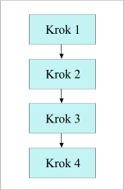
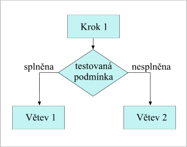
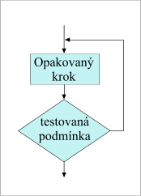
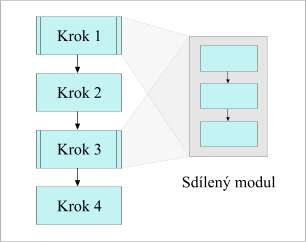
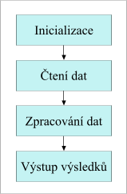
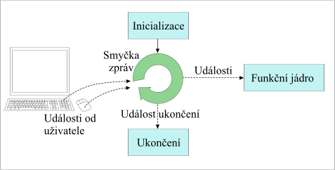

O čem si budeme povídat?
Uvedeme si počítačovou terminologii, zmíníme se trochu o historii a stručně se podíváme na strukturu počítačového programu.
Počítačové programování spočívá v umění donutit počítač, aby dělal to, co chcete aby dělal.
Na nejjednodušší úrovni to znamená předat počítači posloupnost příkazů, které vedou k dosažení cíle. Uživatelé systému MS DOS byli zvyklí vytvářet textové soubory, do kterých zapisovali seznamy příkazů, jako takzvané BAT soubory (dávkové soubory). Ty jednoduše předepisují zpracování posloupnosti příkazů jako jednu dávku (anglicky batch [beč]), odtud jejich název. Dávkové soubory můžete používat i v současném prostředí Microsoft Windows, ale v praxi se s tím setkáte zřídka[1].
Dejme tomu že vytváříte dokument (jako je tato učebnice), který se
skládá z mnoha samostatných souborů s příponou HTM. Pokaždé, když uložíte
novou verzi souboru, může váš textový editor uchovávat záložní kopii souboru
s původním obsahem (anglicky backup [bek ap], odtud BAK). Dejme tomu, že na
konci vašeho celodenního snažení chcete aktuální verzi dokumentu (všechny
soubory v nejnovější podobě) uložit do adresáře, který se jmenuje
ZALOHA. Nakonec chcete uklidit a smazat všechny záložní soubory
(BAK), abyste zítra mohli začít od čistého stolu. Jednoduchý
dávkový soubor, který toto vše zajistí, by mohl vypadat takto:
COPY *.HTM ZALOHA DEL *.BAK
Pokud byste soubor nazvali ULOZIT.BAT, pak byste na konci
každého dne jednoduše na příkazový řádek systému DOS napsali příkaz
ULOZIT. Nové soubory by se uložily a starší záložní soubory by
se smazaly. A právě toto je program.
Poznámka: Uživatelé systému Linux nebo jiných operačních systémů znají své verze podobných souborů jako shell skripty. Shell skripty v systému Unix jsou mnohem mocnější, než dávkové soubory systému MS DOS. Podporují většinu programovacích technik, které budeme probírat v této učebnici.
Pokud vás předchozí text znepokojil, nemějte obavy. Počítačový program je jednoduše sada instrukcí, která počítači říká, jak provést určitý úkol. Je to jako kuchařský recept: sada instrukcí, která kuchaři říká, jak připravit určité jídlo. Popisuje ingredience (data) a poloupnost kroků (proces), které jsou potřebné k tomu, aby se ingredience změnily na dort nebo cokoliv jiného. Programy se tomu velmi podobají.
Tak jako používáte určitý jazyk, když mluvíte s kamarádem, musíte nějaký jazyk použít se i při hovoru s počítačem. Jediný jazyk, kterému počítač rozumí, se nazývá binární. Vyskytuje se v několika odlišných dialektech — to je důvod proč onen skvělý program pro iMac nepoběží na vašem PC a naopak. Binární jazyk se naneštěstí lidem obtížně čte a obtížný je i z hlediska přímého zápisu. Proto musíme používat nám bližší počítačový jazyk, který si necháme přeložit do binární podoby. Je to jako kdybyste sledovali rozhovor mezi prezidenty U.S.A. a Ruska při setkání na vrcholné schůzce — první něco říká a překladatel to opakuje v ruštině. Druhý odpovídá v ruštině a překladatel jeho větu opět opakuje, tentokrát ovšem v angličtině.
Překvapující může být skutečnost, že ta věc, která překládá počítačový jazyk do binární podoby, se nazývá překladač. (Poznámka překladatele: V anglickém originále je jak pro simultánního překladatele lidského jazyka, tak pro onen počítačový překladač použito stejné slovo interpreter.) A tak jako obvykle potřebujete jednoho tlumočníka pro překlad z angličtiny do ruštiny a jiného pro překlad z arabštiny do ruštiny, podobně potřebujete jiný překladač pro překlad z jazyka Python do binární podoby a jiný pro překlad z jazyka VBScript do binárního kódu.
První programátoři museli opravdu binární kód zapisovat ručně. Tato
činnost je známa jako programování ve strojovém kódu a je velmi
obtížná. Dalším krokem bylo vytvoření překladače, který jednoduše nahrazoval
zápis binárních instrukcí zápisem využívajícím anglické ekvivalenty. Takže
místo toho, aby si programátoři museli pamatovat, že kód
001273 05 04 znamená sečti 5 a 4 (anglicky add 5 to
4), mohli napsat ADD 5 4. Toto prosté
zlepšení programátorům velmi zjednodušilo život. Podobné systémy kódů byly
ve skutečnosti prvními programovacími jazyky — určeným vždy pro
konkrétní typ počítače. Pro tento jazyk se používalo označení jazyk
symbolických instrukcí. (V angličtině se takový překladač
nazýval assembler a stejný pojem se používal i pro samotný jazyk.)
Programování v assembleru (nebo v jazyku symbolických instrukcí, chcete-li) se
při řešení velmi specializovaných úloh používá dodnes.
Dokonce i takový přístup se ukázal jako velmi primitivní. Pořád jste museli počítači říkat co má dělat na technické úrovni (co má provádět jeho procesor), jako například přesuň bajty z této oblasti paměti do jiné, sečti tento bajt s tímto, a podobně. Bylo to stále velmi složité a dokonce i vyřešení malých úkolů dalo hodně práce.
Aby se programování zjednodušilo, byly postupně vyvinuty počítačové jazyky vyšší úrovně. Popudem k jejich vývoji byla také skutečnost, že uživatelé ve stejné době přicházeli se stále složitějšími úkoly, pro jejichž řešení by se dal počítač využít. Toto soutěžení mezi vědci a uživateli stále pokračuje, a proto stále vznikají nové a nové jazyky. Dělá to programování zajímavějším. Současně je ale důležité, aby programátoři rozuměli jak programátorským konceptům, tak praktickým způsobům používání těchto konceptů v jednotlivých jazycích.
O některých běžných konceptech se zmíním v následujícím textu. V průběhu kurzu se k nim budeme opakovaně vracet.
Před mnoha lety přišel Edsger Dijkstra s konceptem nazývaným strukturované programování. Tento koncept říká, že struktura všech programů může být vyjádřena pomocí následujících čtyř způsobů (prostředků, obratů, stavebních prvků):
Při provádění posloupnosti instrukcí program provádí jednotlivé instrukce v přesně určeném pořadí, jednu za druhou.

V určitém bodě provádění programu dochází k rozhodování. V případě pravdivého výsledku prováděného testu se pokračuje instrukcemi v první větvi, v opačném případě se přejde k provádění akcí v druhé větvi. Takovému větvení se někdy říká i podmíněné větvení, protože další směr běhu programu závisí na výsledku testu podmínky.

V případě cyklů se opakuje provádění kroků až do doby, kdy je splněna určitá podmínka. V tom okamžiku tok řízení programu opouští smyčku a přechází se k provádění dalších částí programu.

Poznámka překladatele: Popsaný a zobrazený typ
cyklu bývá v jazyce Pascal vyjádřen konstrukcí
repeat/until. V tomto případě se testování
podmínky provádí až za tělem cyklu. Instrukce v těle cyklu se tedy provedou
přinejmenším jednou. Říká se, že pro více než 90 % případů se hodí
spíše cyklus typu while, kdy se podmínka testuje ještě před
prvním provedením instrukcí v těle cyklu. Při nesplnění podmínky se tedy
tělo cyklu nemusí provést ani jednou.
V naznačeném případě program provádí několikrát stejnou posloupnost akcí. Ty můžeme umístit do modulu, který můžeme chápat jako miniprogram, proveditelný z hlavního programu. Moduly s popsaným charakterem bývají nazývány také jako podprogram, procedura nebo funkce.

Poznámka překladatele: V tomto okamžiku neuvažujeme o modulech ve významu technické realizace samostatných (samostatně kompilovaných), opakovatelně použitelných jednotek pro výstavbu programu.
Používání modulů v tomto smyslu se anglicky označuje také jako DRY principle (Do not Repeat Yourself), který vyjadřuje snahu o to, abychom stejný nebo velmi podobný kód nepsali opakovaně. Hlavním důvodem jsou jeho pozdější modifikace. Při opakovaném rozepisování na různých místech programu se zvyšuje pravděpodobnost toho, že budoucí úpravy zapomeneme promítnout do všech částí. Dalším důvodem je i zjednodušení opakovaného použití takto zapsané funkčnosti. Typickým příkladem je používání funkcí ze standardních a jiných knihoven. Dostupnost a správná volba vhodných knihoven výrazně zvyšuje produktivitu při tvorbě programu.
Kromě těchto strukturálních prvků potřebujeme doplnit několik dalších rysů, bez kterých by program ztrácel smysl:
Jakmile pochopíte tyto koncepty a to, jak se v určitém programovacím jazyce vyjadřují, jste schopni v tomto jazyce programovat.
Už jsme si řekli, že programování spočívá v umění donutit počítač dělat to, co chcete aby dělal. Ale co to je vlastně program?
Na program se v podstatě můžeme dívat ze dvou různých pohledů. Podle prvního pohledu — jak to vidí uživatel — jde o spustitelný soubor, který může být nainstalován a může být opakovaně spouštěn s cílem zpracovat daný úkol. Uživatelé například říkají, že spouštějí svůj textový editor. Z druhého pohledu — jak to vidí programátor — jde o textový soubor s příkazy pro počítač, zapsaný v nějakém programovacím jazyku, který může být přeložen do podoby spustitelného souboru. Takže když budete mluvit o programu, dejte vždy najevo, který z těchto pohledů máte na mysli.
V zásadě lze říci, že programátor píše program ve vyšším programovacím jazyce, srozumitelném pro programátora, a ten je přeložen na soubor bajtů, kterým rozumí počítač. Z technického pohledu programátor generuje zdrojový kód a překladač z něj generuje cílový kód[2]. Cílový kód bývá někdy nazýván i jinými jmény, jako například P-kód, binární kód nebo strojový kód.
Pro překladače se používají dvě různá jména. Jeden typ bývá nazýván jako interpret a druhý jako kompilátor. Tyto dva pojmy se ve skutečnosti vztahují k dvěma odlišným technikám generování cílového kódu ze zdrojového kódu. Za kompilátory (kompilační překladače) byly obvykle považovány takové překladače, které produkovaly přímo spustitelný cílový kód (jinými slovy spustitelný soubor), zatímco interpret (interpretační překladač) musí být přítomen při každém spuštění programu. Původně ostrá hranice mezi těmito přístupy je nyní stále mlhavější. Některé soudobé kompilátory vyžadují přítomnost interpretu, který provádí konečnou konverzi kódu, a některé interprety jednoduše kompilují zdrojový kód do podoby dočasně existujícího cílového kódu, který poté spustí.
Z našeho pohledu v tom není žádný důležitý rozdíl. Vytvoříme zdrojový kód a použijeme nástroj, který počítači umožní, aby jej přečetl, přeložil a provedl.
Konkrétní struktura programu závisí na programovacím jazyce a na prostředí, ve kterém se program spouští. Některé jejich rysy ale mají obecnou platnost:
Většina programů má jednu ze dvou následujících podob:
Programy tohoto typu se typicky spouštějí z příkazového řádku (nebo automaticky prostřednictvím plánovacího programu[3]) a chovají se přibližně podle následujícího vzoru:

Program typicky zahajuje činnost nastavením svého vnitřního stavu (například nastavením celkového součtu na nulu), otevřením potřebných souborů atd. Jakmile je připraven, začíná číst data buď zadávaná uživatelem v místě, kde program zobrazuje vyzývací text na obrazovce, nebo z datového souboru. Často se používá kombinace obou přístupů, kdy uživatel určí jméno datového souboru, ze kterého se poté načítají skutečná data. Poté program provádí zpracování dat za využití matematických operací, funkcí pro konverzi dat nebo jakýchkoliv jiných transformací. Získané výsledky se zobrazují na displeji nebo se třeba zapisují do výstupního souboru.
Všechny programy, které budeme vytvářet v rámci prvních částí tohoto kurzu, budou mít charakter programů s dávkovým zpracováním.
Většina systémů s grafickým uživatelským rozhraním — anglicky GUI = Graphical User Interface — (a vestavěné řídicí systémy — jako například ty, které řídí činnost vaší mikrovlnné trouby, fotoaparátu a podobně) je řízena událostmi. To znamená, že operační systém zasílá zprávy o událostech běžícímu programu a ten na ně reaguje v okamžiku, kdy se událost objeví. Události mohou být vyvolány uživatelem — například stisknutím tlačítka myši nebo stisknutím klávesy na klávesnici — nebo je může generovat přímo systém, jako například událost aktualizace systémového času nebo událost požadavku na překreslení obrazovky.
Událostmi řízené programy se chovají obecně podle následujícího vzoru:

Program řízený událostmi rovněž zahajuje svou činnost nastavením svého vnitřního stavu. Ale poté je řízení předáno takzvané smyčce událostí (event loop), která je obvykle realizována operačním prostředím (někdy je označováno jako runtime). Program zde čeká, až je detekována uživatelská akce, která se přeloží do podoby události. Zprávy o těchto událostech jsou jedna po druhé zaslány jiným částem programu, které je zpracovávají. Uživatel nakonec provede akci, která program ukončuje. V tomto bodě je vygenerována událost ukončení (označována jako Exit nebo Quit), která je programu rovněž zaslána. Poznámka překladatele: Program na jejím základě provede své ukončení.
Ke smyčkám událostí a k událostmi řízenému programování se dostaneme v Tématech pro pokročilé a potom ještě jednou v souvislosti s programováním grafického uživatelského rozhraní.
Zapamatujte si
Pokud vás napadne, co by se dalo na překladu této kapitoly vylepšit, zašlete e-mail odklepnutím Tím budou do dopisu automaticky vloženy informace o tomto HTML dokumentu.
$Id: cztutwhat.html,v 1.16 2005/01/09 19:44:12 petr Exp $